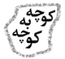

پذيرش > كوچه به كوچه > كمپين شده همه زندگي ما/خدیجه مقدم


 كمپين شده همه زندگي ما/خدیجه مقدم كمپين شده همه زندگي ما/خدیجه مقدم
16 مهر 1385 - - نسخه قابل چاپ
اصلا فكرش را نمي كردم كمپين اين همه مورد استقبال قرار بگيرد. با اينكه سال هاست هم با زنان كار مي كنم و هم در مورد مسائل زنان مطالعه مي كنم و از راه تجربه و دانش، بي عدالتي هاو قوانين تبعيض آميز را با تمام وجودم حس كرده ام و اعتقاد عميق دارم كه قوانين بايد با مشاركت مردم تغيير كندومي دانم كه خواسته هاي كمپين هم از دل مطالبات توده هاي زنان بيرون آمده ولي باز اينهمه استقبال را باور نمي كنم.
از وقتي اين حركت جمعي را در مقابل درهاي بسته موسسه رعد_ جايي كه قرار بود سمينار افتتاحيه برگزار شود_ آغاز كرديم، تا الان كه اين مطلب را مي نويسم، روزي نيست كه براي پيشبرد اهداف كمپين كاري نكرده باشم. اصلا اين كمپين شده همه زندگي ما و واقعا مگر جز آموزش و مبارزه براي تغيير، كاري هم در زندگي داشته ايم؟
به جرات مي توانم بگويم هيچ حركت جمعي تا كنون اينقدر براي من اهميت نداشته، چرا كه با افكار و شيوه مبارزه اي كه من به آن اعتقاد دارم كاملا همخواني دارد.
اهداف اين حركت جمعي، حساس سازي، آگاه سازي و جلب مشاركت مردم در تغيير قوانين تبعيض آميز عليه زنان و فشار از پائين از طريق جمع آوري يك مليون امضا است، متمدنانه ترين روشي كه حداقل موفقيت آن ارتقاي فرهنگ جامعه است.
در مدتي كه براي كمپين كار مي كنم حتي يك مورد هم پيش نيامده كه كسي با كليت خواستههاي ما مخالف باشد.
** به يك عروسي در كرج مي روم. دوستان دورم جمع مي شوند و از خبرهاي تازه ميپرسند. من از كمپين مي گويم و از اهدافش، همه خوشحال مي شوند و قرار مي گذارند كه عده اي را دعوت كنند و در جمع بزرگتري مفصل صحبت كنيم و حركت را شروع كنند.
**تولد نود سالگي خانم ملاح، مدير عامل جمعيت مبارزه با آلودگي محيط زيست است، منصوره شجاعي و دخترم آزاده هم هستند، از يك فرصت مناسب استفاده مي كنم و توجه مهمانان را به اينكه خانم ملاح نوه بي بي خانم استر آبادي _ موسس اولين مدرسه دخترانه ايران_ هستند جلب مي كنم. از تلاش هاي زناني چون بي بي خانم ها و خانم ملاح ها ميگويم و كمپين را معرفي مي كنم. منصوره در حين صحبت هاي من جزوه ها را پخش مي كند و آزاده ضمن عكاسي، امضاها را جمع مي كند. خوشبختانه سه نفري از عهده پاسخ ها برميآييم، همه به اتفاق امضا مي كنند و هفت نفر هم براي همكاري با كمپين داوطلب مي شوند.اهميت آگاهي را كاملا مي توان لمس كرد. ميهمانان كساني هستند كه به توسعه پايدار كشورشان علاقمندند.
** از يكي از مناطق جنوبي شهر تهران برمي گردم.راننده آژانس مي گويد: « تا تلفن مي شود كه شما ماشين مي خواهيد من داوطلب مي شوم، چون ارادت خاصي به شما دارم. خدا عوضتان بدهد كه اينهمه زن بي سرپرست را مشغول كار كرده ايد. تشكر مي كنم و مي گويم: « همين كه شما اينقدر به من لطف داريد پاداش بزرگي است. تازه زنان سرپرست خانوار محله شما همه شير زن هستند و من كاري نمي كنم. خودشان دارند زحمت مي كشند.»
راننده بسيار متدين و متين است و بقول خودش از شيخ هاي قديمي است.مي پرسم:« راستي اگر يكي از اين زن ها تصادف بكند يا اتفاقي برايش بيافتد كه خداي نكرده مثلا دستش قطع شود به نظر شما چقدر بايد ديه بگيرد؟ نصف مرد؟ » مي گويد: « نه!نه! اينها نان آور خانه هستند و بيشتر از يك مرد كار مي كنند.»
مي گويم ولي قانون اين را نمي گويد. كمي فكر مي كند و مي گويد:« بايد قانون به اين شكل عوض شود كه هر زني نان آور خانه است ديه اش برابر مرد باشد.» مي گويم: « خانم.... را كه مي شناسيد، چهار بچه محصل دارد و شوهر معتادش معلوم نيست كجاست و او از نظر قانون زن شوهر دار است. تازه همين الان خداي نكرده براي من و شما اتفاقي بيافتد و چشم مان را از دست بدهيم فكر مي كنيد دارزش چشم من كمتر از چشم شما است؟» ناراحت مي شود و خجالت مي كشد و مي گويد: «من اصلا فكر نمي كردم اينجوري باشد.»
راه طولاني است و صحبت ها فراوان. به خانه كه مي رسيم يك جزوه «تاثير قوانين بر زندگي زنان» به او مي دهم و فرمي را كه زنان محله شان امضا كرده اند نشانش مي دهم و مي گويم اگر دوست داري امضا كن. با كمال ميل امضا مي كند. خستگي روز از تنم بيرون مي رود.
** با يكي از حاج آقاهاي فاميل در مورد نابرابري ارث صحبت مي كنم. مي گويد:« مرد اگر شعور داشته باشد قبل از فوتش بايد نصف اموالش را به نام زنش بكند، مگر بيشتر مردهاي فاميل ما اينكار را نكرده اند.» مي گويم:« اگر شعور نداشته باشد چه مي شود. »
مي گويد:« شما بايد مردها را آموزش بدهيد. قانون اسلام را كه نميشود عوض كرد. »
از كشور مصرر مي گويم كه راه حلي پيدا كرده اند و طبق قانون همه مردها يك سوم اموالشان قبل از تقسيم به زن و دخترانشان مي رسد و بقيه تقسيم مي شود. چون طبق قانون اسام هر كس مي تواند يك سوم اموالش را ببخشد. برايش خيلي جالب است و مي پرسد:« خب چرا اينجا اينكار را نمي كنند. » مي گويم: «تا همه فشار نياوريم هيچ اتفاقي نمي افتد.»
بله بله گويان بلند مي شود و به سمت ديگري مي رود. ولي من مطمئن هستم كه دارد به حرف هاي من فكر مي كند.
** از وقتي مصاحبه ها از راديوها پخش شده و سايت كمپين فعال شده تلفن ام مرتب از داخل و خارج ايران زنگ مي زند، هركس چيزي مي گويد. بعضي ها تبريك مي گويند و بعضي ها طالب شنيدن مطالب بيشتري هستند. يكي از دوستانم مي گويد تمام مطالب سايت تغيير براي برابري را خواندم و امضا هم كردم، عالي بود. مخصوصا آنجايي كه نوشته بوديد فرهنگ جامعه ايران جلوتر از قوانين است و قوانين بايد جلوتر از فرهنگ باشد تا باعث ارتقاي فرهنگ جامعه شود. از اين قسمت خيلي خوشش آمده بود و مرتب تكرار مي كرد كه هيجان زده است.مي گويد اسلام هم خيلي جلوتر از قوانين ايران است. كاش قوانين ما اسلامي بود. من چون اطلاعاتي در اين زمينه ندارم با او بحث نمي كنم.
** دوست ديگري زنگ مي زند و با دلخوري مي گويد: شجاعت نداشتيد بگوييد دين بايد از حكومت جدا باشد؟ اگر آيت الله صانعي حرفش را پس بگيرد شما چكار مي كنيد؟ باز هم دفاع مي كنيد؟ اجازه مي خواهم منهم نظرم را بگويم: « مگر تو به دموكراسي معتقد نيستي؟ اين كمپين از طرف تعدادي از فعالان جنبش زنان با تفكرهاي مختلف شكل گرفته و به حركت درآمده است. به اعتقادات مردم احترام بگذار دوست عزيزم.»
** پسرم وقتي فرم را امضا مي كند، اولويت قانوني خود را شهادت مي نويسد و مي گويد لجم مي گيرد كه دو تا چشم زن با دو تا چشم مرد براي ديدن حادثه چه فرقي با هم دارند. تازه زن ها كه بهتر هم مي بينند و به ريزه كاري ها بيشتر توجه دارند.
** براي شركت در يك سمينار و برگزاري كارگاه در تبريز هستيم. يكي از دوستانم كه فكر مي كردم خيلي از زندگي اش راضي است با يك آه بلند مي گويد ما زنان خانه دار واقعا هيچ حقي نداريم. نه حقوق بازنشستگي. نه درآمدي و نه ثروتي، واقعا زندگي را باخته ايم. دخترش دانشجوي معماريست ، با غرور مي گويد:« من تمام مقالات جنس دوم و فصل زنان را خوانده ام و با نظرات شما آشنا هستم. » با خوشحالي مي گويم:«آفرين پس در تبريز هم پخش مي شده؟» مي گويد: « نمي دانم ولي شما برايم توسط پدرم مي فرستاديد.» باورم نمي شود كارهاي كوچكي كه آدم انجام ميدهد و بعد هم فراموش مي كند اينقدر موثر باشد. مي گويد:« من به دوستانم آموزش خواهم داد و امضا جمع مي كنم.»
**در كارگاه هاي آموزشي و نشست هاي دوستانه هم تجربياتم را منتقل مي كنم و هم مي اموزم و هر روز جان تازه اي مي گيرم. باورم نمي شود كه روز به روز خودم هم قوي تر شده ام.
تلفن ام مرتب زنگ مي زند. «به من جزوه برسان»، « فرم امضا مي خواهم»، «راجع به كمپين سوال دارم»، از رشت تماس مي گيرند، از اروميه، از سنندج، از..... نمي توانم به همه جواب بدهم، بايد از دوستانم كمك بگيرم.
به تعدادي از دوستانم قول داده ام هفته آينده دور هم جمع شويم و نشستي آموزشي مشورتي داشته باشيم و بعد شروع به كار كنند.
**در همايش سازمان جهاني كار هستم. از يكي از استادانم كه شهرت فراواني در پيگيري مطالبات زنان دارد امضا مي گيرم، مي گيود از تمام جريانات با خبرم، چند صفحه به من بده ببرم دانشگاه امضا جمع كنم.
** با يكي از دوستان اصلاح طلب صحبت مي كنم. مي گويد عاليست، من هم در جمع كردن امضاها كمك مي كنم. خودم هم آن وسطها امضا مي كنم، نمي خواهم امضايم اول صفحه باشد.
شب همسرم كه به منزل مي آيد از نقطه نظرات دوستان اش و تعداد امضاهايي كه در مطب اش گرفته مي گويد.
شب با كمپين به پايان مي رسدو صبح دوباره شروع مي شود.
ارسال به
بالاترین
،
توییتر
،
فریندفید
،
فیسبوک
در همين بخش :
 روايت بيست و پنجمين شهريور / نرگس طیبات روايت بيست و پنجمين شهريور / نرگس طیبات
وقتی آتش خاموش شود/فرشته نوبخت
آن گاه که زن شدم / ویژه نامه 8 مارس 1391
چیزی زیر پوست این شهر می جوشد / دلارام علی
گرسنگی / وبلاگ سیب و سرگشتگی
ديگر بخش ها :
طرح یک میلیون امضا
|
مقالات
|
سایت نوشته ها
|
اخبار
|
گزارش كمپين
|
گفت و گو
|
علیه سکوت
|
كوچه به كوچه
|
نامه های شما
|
گزارش ویژه
|
گفتگو با اعضا
|
ویژه سالگرد کمپین
|
تصویر برابری
|
دل آرام علی
|
تریبون
|
مقالات
|
تاریخ شفاهی
|
خارج از چارچوب
|
کتابخانه
|
درباره کمپین
|
کمپین در شهرها
|
کمپین در بند
|
صدای تغییر
|
ویژه 22 خرداد
|
لایحه حمایت از خانواده
|
گالری
|
عشا مومنی
|
امیر یعقوبعلی
|
خدیجه مقدم
|
راحله عسگری زاده و نسیم خسروی
|
پروین اردلان،جلوه جواهری، مریم حسین خواه، ناهید کشاورز
|
زینب پیغمبرزاده
|
سعیده امین، سارا ایمانیان، محبوبه حسین زاده، ناهید کشاورز و همایون نامی
|
احترام شادفر
|
نسیم سرابندی زاده،فاطمه دهدشتی
|
وبلاگ مهمان
|
پرونده خرم آباد
|
دستگیری ها
|
مریم مالک
|
پرستو اللهیاری
|
مهرنوش اعتمادی
|
سمیه رشیدی
|
Other Languages
|
همراهان
|
«فراخوان کمپین ده روز با بهاره هدایت»
| English
|